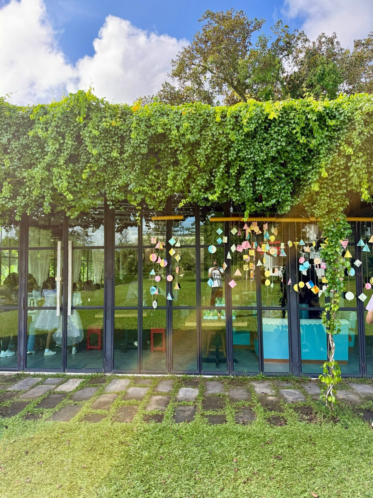
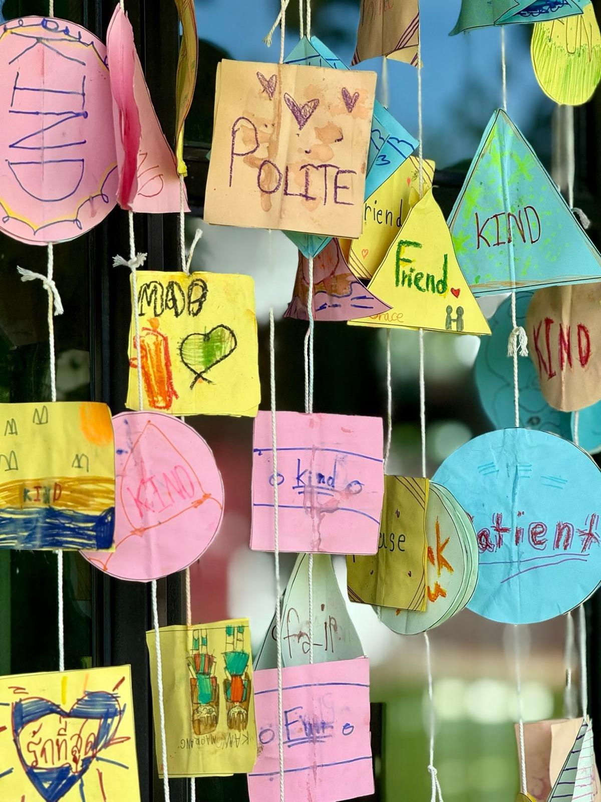
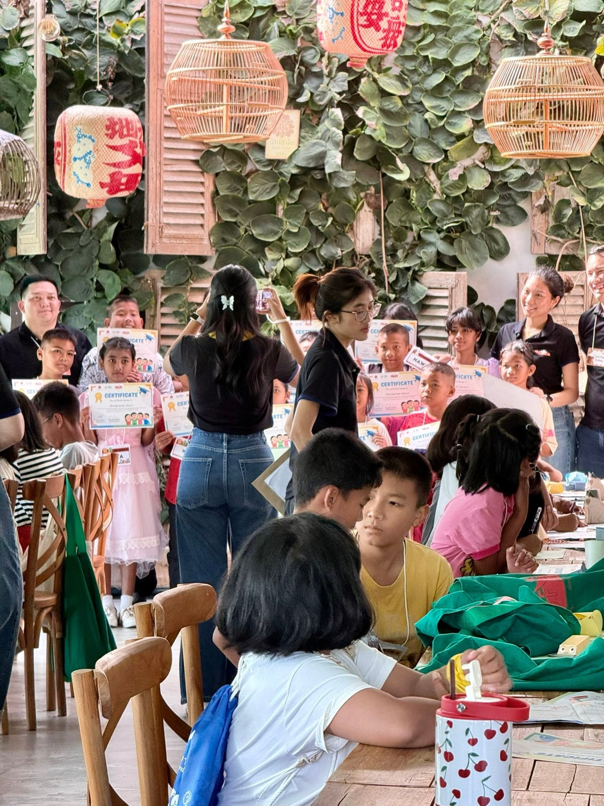
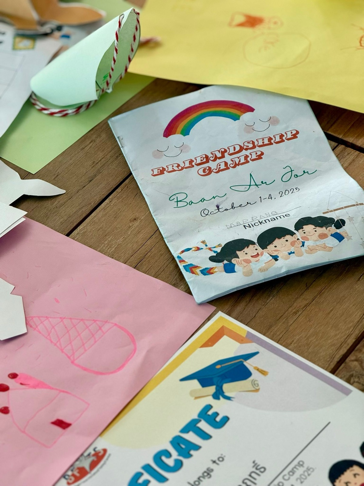
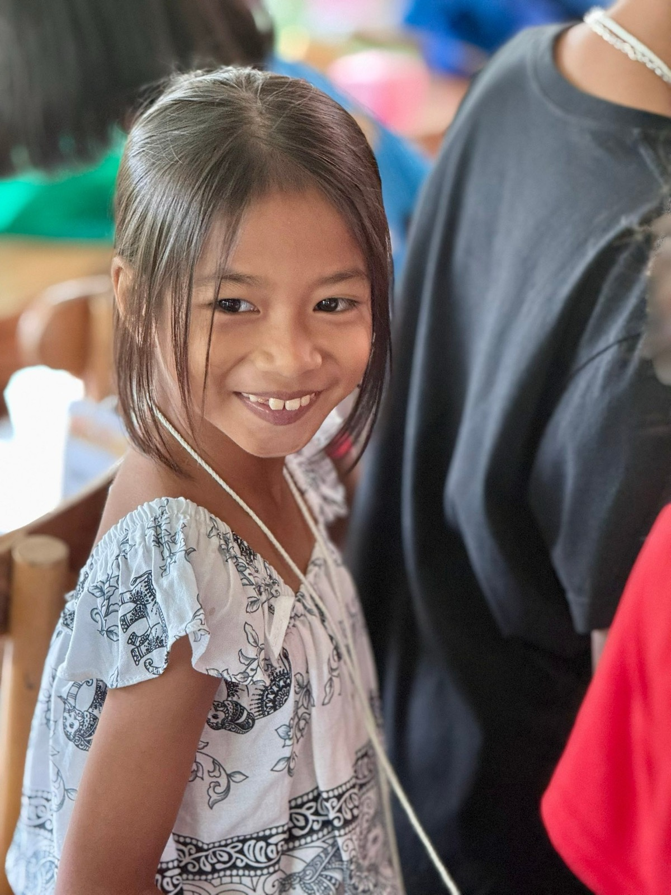
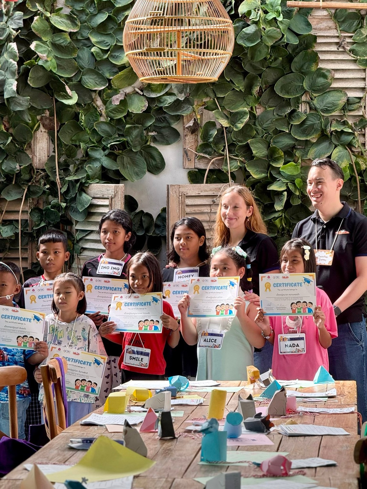

2025 · role · event
Second Friendship Camp teaches English to 94 children at Baan Ar-Jor






Original text in Thai
กิจกรรมเช้านี้ ที่บ้านอาจ้อ-หว่ออ้ายหนี่ ✨🌿
ปีที่ 2 แล้วที่โต๊ะแดงบ้านอาจ้อ ได้ร่วมจัด Friendship Camp สอนภาษาอังกฤษน้องๆ อายุ 8-12 ปี 94 ชีวิต กิจกรรมยาวๆ 4 วัน ตั้งแต่โรงเรียนบ้านไม้ขาวมาจนถึงบ้านอาจ้อ ❤️
เพิ่งมีโอกาสได้ข้อมูลด้านการศึกษา ปีนี้เด็กเกิดใหม่ เหลือสี่แสนกว่าคน อัตราเกิดน้อยสุดในรอบ 150 ปีว่าโหดแล้ว เจออัตราเสี่ยงมีปัญหาด้านการเรียนรู้พุ่งสูงถึง 25% นี้ยังไม่นับรวมปัญหาอื่นๆที่ยังไม่ได้กล่าวถึงอีก 🥲
ว่าไปดีใจที่ได้เริ่มทำบ้านอาจ้อตั้งแต่ 9 ปีที่แล้ว อะไรที่พอจะ support ได้ จะพยายามทำให้มากที่สุดเท่าที่จะทำได้นะ ❤️
วันนี้ทีมครัวเตรียมข้าวกล่องอกไก่น้ำแดงให้น้องๆ ได้กินกันตอนมื้อเที่ยง หวังว่าจะชอบกันนะ คับ 😋❤️
สุดท้ายขอบคุณทีมงานทุกคน ตั้งแต่ทีม BFITS ครูอาสาจาก ตปท รวมตัวกันมาสอนน้อง ๆ ทีมครูโรงเรียนบ้านไม้ขาว support ให้งานนี้เกิดขึ้น เด็กๆ ได้ประโยชน์กันทุกคน ทีมโต๊ะแดงบ้านอาจ้อ ตั่วจี้ ตั่วโก๊ คุณแม่ ครูกบ และทีมทุกคน ตั้งแต่ประสานงาน จนจัดเตรียมทุกอย่าง ❤️
สุดท้าย สายเทวสัมพันธ์ 😇✨ ท่ามกลางหน้าฝนแบบนี้ วันนี้แดดสดใสสุด ๆ น้องๆได้ทำกิจกรรมการอย่างสนุกสนาน 😇❤️
#longdaengPhuket 🧧
#tohdaengPhuket 🧧
#บ้านอาจ้อ ❤️